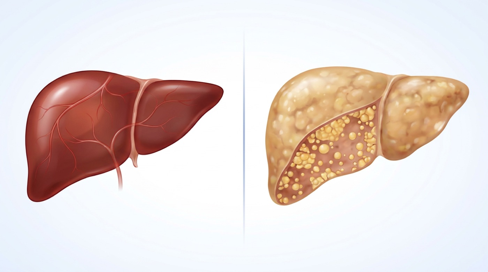

검사 결과에서 보는 핵심
| 항목 | 주로 어디서 | 올라가는 흔한 이유·읽는 법 |
|---|---|---|
| ALT | 간세포 | 간에 특이적인 염증 지표 |
| AST | 간·근육 | 운동 후도 상승 가능 — 근육 손상이면 CK(근육 효소)도 함께 오를 수 있음 |
| GGT | 음주·비만 | 단독 상승은 주로 음주·비만이 원인 |
흔한 원인과 확인할 검사
흔한 원인
- 지방간 — 복부비만·당뇨·고중성지방과 동반
- 음주 — GGT(r-GTP) 단독 상승은 주로 음주·비만이 원인, AST가 ALT보다 높을 수 있음
- 약·영양제 — 진통제, 한약, 보충제 포함
- 운동·근육 손상 — AST·CK(근육 효소) 동반 상승 가능
- 간염 검사 — B형·C형 간염 여부
- 복부초음파 — ALT만 높다고 지방간은 아닙니다 — 지방간은 초음파 같은 영상으로 확인합니다(담석·간 종괴 확인)
- 대사 위험 평가 — 혈당, 지질, 혈압, 허리둘레
- 섬유화 평가 — 나이·간수치·혈소판으로 계산하는 점수(FIB-4), 필요하면 간 굳기를 재는 탄성도 검사
- 우르소데옥시콜산(우루사) 등 간장약 — 간수치는 내려도 지방간 자체는 그대로일 수 있음
지방간이라면 — 감량 목표 체중의 7~10%

지방간은 최근 '대사이상 지방간질환(MASLD)'으로도 불리며, 간 자체보다 심혈관질환·간 외 암 위험이 더 문제가 되는 경우가 많습니다.
| 체중 감량 폭 | 기대할 수 있는 효과 |
|---|---|
| 5% 이상 | 간 지방 감소 |
| 7~10% | 간 염증 호전 |
| 10% 이상 | 섬유화(간이 굳는 변화) 호전 가능 |
 생활 관리의 우선순위
생활 관리의 우선순위
먼저 줄일 것
- 술 — 지방간에 안전한 음주량은 없어 적을수록 좋습니다. 줄이는 것이 기본이고, 섬유화가 진행했거나 간경변이면 완전히 끊습니다. 재검 전 2~4주는 금주 권장
- 당 음료·과자 — 과당은 지방간 악화와 연관
- 과일주스·제로 음료 — 과일주스는 당 음료처럼 줄이고, 제로 음료도 물·보리차로 바꾸는 것이 좋음
- 야식·폭식 — 체중보다 복부지방 감소가 중요
- 불필요한 보충제 — 성분 불명 제품은 중단 상담
늘릴 것
- 주 150분 유산소 — 빠르게 걷기부터 시작
- 주 2회 근력운동 — 인슐린 저항성 개선
- 단백질·채소 중심 식사 — 흰쌀·면·빵 양 줄이기
- 3개월 재평가 — 간수치·체중·허리둘레 비교
황달, 콜라색 소변, 심한 우상복부 통증, 발열, 멍·코피 증가, 복부 팽만, 원인 모를 체중 감소가 있으면 단순 지방간으로 넘기지 말고 빨리 진료를 보세요. 심한 우상복부 통증에 발열 또는 황달이 함께 있으면 응급실로 가세요. 간수치가 정상이어도 지방간·섬유화가 있을 수 있어 위험요인에 따라 추적이 필요합니다.
함께 보기 — 지방간(대사이상 지방간질환, MASLD)의 단계·검사·치료 전체 설명은 진료실 슬라이드: edu.gwanggyobarun.com/decks/gi/masld-fatty-liver/